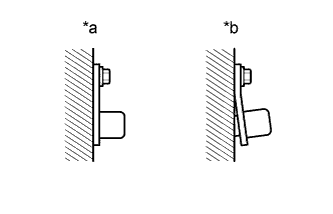
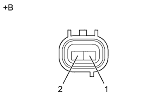
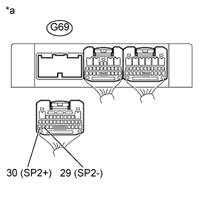

DTC P0722 Отсутствует сигнал в цепи датчика частоты вращения выходного вала |
| Код DTC | Условие обнаружения DTC | Неисправный участок |
| P0722 | Не менее 500 раз подряд выполняются все условия (логика диагностирования за 2 поездки): (a) Несмотря на передачу 4-импульсного сигнала датчика скорости автомобиля № 1, сигнал от датчика частоты вращения SP2 не поступает в TCM. (b) В течение не менее 5 с скорость автомобиля равна 9 км/час (6 миль в час) или более. (c) Датчик положения паркинга/нейтрали в состоянии OFF (ВЫКЛ). (d) Раздаточная коробка не установлена в нейтральное положение. |
|
| Номера контактов (обозначения) | Настройки прибора | Условие | Заданные условия |
| G69-30 (SP2+) - G69-29 (SP2-) | 2 В/дел., 20 мс/дел. | Скорость автомобиля – 20 км/час (12 миль в час) | См. рисунок |
| DATA LIST |
Прогрейте двигатель.
Выключите зажигание.
Подсоедините портативный диагностический прибор к DLC3.
Включите зажигание (IG).
Включите портативный диагностический прибор.
Войдите в следующие меню: Powertrain / ECT / Data List.
В соответствии с указаниями на дисплее портативного диагностического прибора считайте данные в режиме Data List.
| Информация на дисплее прибора | Измеряемая величина / диапазон измерения | Нормальное состояние | Замечание по диагностике |
| SPD (SP2) | Частота вращения выходного вала / Мин.: 0 км/час (0 миль в час) Макс.: 255 км/час (158 миль в час) | Автомобиль неподвижен: 0 км/час (0 миль в час) (частота вращения выходного вала совпадает с частотой вращения колеса) | - |
| 1.ПРОВЕРЬТЕ МОНТАЖ ДАТЧИКА ЧАСТОТЫ ВРАЩЕНИЯ SP2 |
|  |
Проверьте монтаж датчика частоты вращения SP2.
| *a | ПРАВИЛЬНО |
| *b | НЕПРАВИЛЬНО |
|
| ||||
| OK | |
| 2.ПРОВЕРЬТЕ ДАТЧИК ЧАСТОТЫ ВРАЩЕНИЯ SP2 |
|  |
Отсоедините разъем C31 датчика частоты вращения.
Измерьте сопротивление в соответствии со значениями, приведенными в таблице ниже.
| Контакты для подключения диагностического прибора | Условие | Заданные условия |
| 1 - 2 | 20°C (68°F) | 560-680 Ом |
| *a | Устройство с неподсоединенным жгутом проводов (датчик частоты вращения SP2) |
|
| ||||
| OK | |
| 3.ПРОВЕРЬТЕ ЖГУТ ПРОВОДОВ И РАЗЪЕМ (ДАТЧИК ЧАСТОТЫ ВРАЩЕНИЯ SP2 – TCM) |
|  |
Отсоедините разъем G69 TCM.
Измерьте сопротивление в соответствии со значениями, приведенными в таблице ниже.
| Контакты для подключения диагностического прибора | Условие | Заданные условия |
| G69-30 (SP2+) - G69-29 (SP2-) | 20°C (68°F) | 560 - 680 Ом |
| G69-30 (SP2+) - масса | Всегда | 10 кОм или более |
| G69-29 (SP2-) - масса | Всегда | 10 кОм или более |
| *a | Вид сзади разъема со стороны жгута проводов (к TCM) |
|
| ||||
| OK | ||
| ||